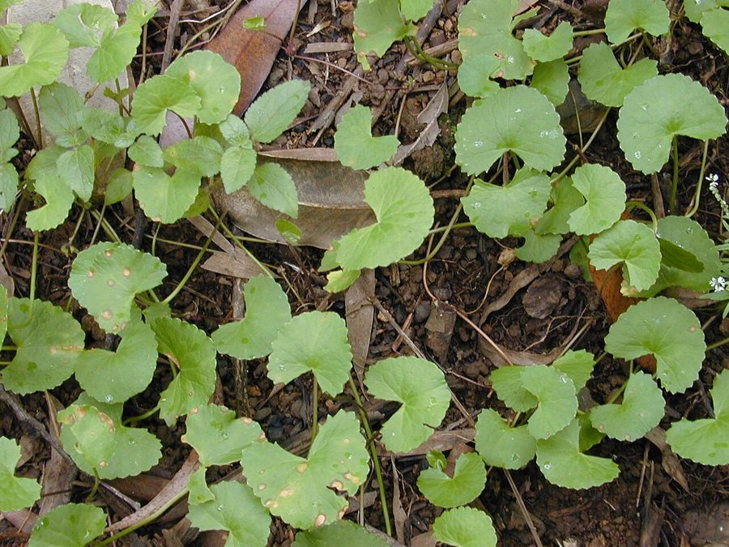

मंडूकपर्णीAsiatic Pennywort
Centella asiatica · Apiaceae · FLR-0059

- Scientific name
- Centella asiatica (L.) Urb.
- Family
- Apiaceae
- Hindi
- मंडूकपर्णी
- Status here
- native
- IUCN
- not evaluated
When to look कब देखें
Present all year.
मंडूकपर्णी / Asiatic Pennywort
Centella asiatica (L.) Urb. — Apiaceae
मंडूकपर्णी (गोटू कोला या ब्रह्ममंडूकी) — उत्तर प्रदेश के जलाशयों के गीले किनारों, तालाबों की मेड़ों और नम बगीचों की मिट्टी में पाया जाने वाला एक छोटा, रेंगने वाला बहुवर्षीय शाकीय पौधा है। इसके पत्ते मेंढक के पंजे या गुर्दे के आकार के होते हैं, जिनका किनारा थोड़ा कटा हुआ (crenate) होता है और ये लंबे पतले डंठलों पर लगते हैं। आयुर्वेद में इसे 'मंडूकपर्णी' कहा जाता है, जिसे मस्तिष्क के स्वास्थ्य, याददाश्त और एकाग्रता को बढ़ाने के लिए एक श्रेष्ठ 'मेध्य रसायन' (बुद्धि वर्धक औषधि) माना गया है। इसके रेंगने वाले तने (runners) जमीन पर फैलकर तेजी से जड़ें जमाते हैं और मिट्टी को बांधे रखते हैं। गांवों में इसके पत्तों का ताजा रस पीने या घी में पकाकर खाने की पुरानी परंपरा है।
Quick Identification त्वरित पहचान
| Feature | Description |
|---|---|
| Form | Small, low-growing, creeping perennial herb; spreads via long, slender horizontal runners (stolons) |
| Leaves | Round, kidney-shaped (reniform) leaves (1–4 cm diameter) with crenate (scalloped) margins and long, erect petioles |
| Stems | Slender, reddish or green stolons that root at nodes where they touch damp soil |
| Flowers | Tiny, sessile, white to pinkish-purple flowers (1–2 mm size) borne in small, flat-topped clusters (umbels) near the leaf base |
| Taste | Leaves have a characteristically mild, sweet-bitter, herbal taste and green aroma when crushed |
Field tip: Look for clumps of kidney-shaped green leaves growing on long vertical stalks in very damp mud. Unlike Brahmi, its leaves are not thick/succulent and carry scalloped edges.
Morphology आकारिकी
Biometrics (typical measurements for wild specimens in Basti):
| Feature | Measurement |
|---|---|
| Plant height | 5–15 cm (foliage canopy) |
| Leaf width (diameter) | 1–4 cm |
| Petiole length | 2–10 cm |
| Flower size | 1–2 mm |
| Fruit size | 3–4 mm |
Leaves & Petioles: Leaves are simple, reniform, or round-cordate, with crenate-dentate margins, growing in small clusters along the stolons. The petioles are long, hollow, and channeled, holding the leaf blades erect.
Roots & Stolons: The stolons are long, creeping, rooting at the nodes, producing small, pale, fibrous root bundles that secure the plant in wet mud.
Flowers & Fruits: Flowers are hermaphrodite, extremely small, and held in simple, few-flowered umbels. The fruit is a small, compressed, ribbed schizocarp that splits into two mericarps.
Vocalisations
Plants do not possess nervous systems or vocal organs and cannot produce sounds.
- Sound production: Silent; no sound production.
Behaviour & Ecology व्यवहार और पारिस्थितिकी
Centella asiatica is a semi-aquatic or moisture-loving (hygrophilic) herb. It grows rapidly during the warm monsoon season, forming dense ground cover that prevents soil erosion along pond banks. It accumulates heavy metals and run-off nutrients, helping filter water entering village ponds, though this makes harvesting it from polluted sites hazardous.
Life Cycle / Phenology जीवन चक्र
- Growth: Expands vegetatively throughout the year via runners, slowing down during the dry, hot summer months.
- Flowering: Small pink-white flowers bloom from April to June and during the monsoon.
- Propagation: Primarily spreads clonally; seeds are dispersed locally by rain wash and flowing water.
Associated Species / Interactions सहजीवी संबंध
- Shelter: The dense ground mats provide shelter for small aquatic insects, frogs (
[AMP-0006 Asian Grass Frog]), and soil macroinvertebrates. - Nutrient Sharing: Enhances soil microbial activity in damp riparian soils.
Predators / Natural Enemies शत्रु
- Insects: Grasshoppers, snails, and caterpillars occasionally chew the leaf margins.
- Mammals: Readily grazed by sheep, goats, and cattle when accessible near dry pond beds.
- Humans: Frequently harvested from the wild for traditional medicinal formulations.
Agricultural / Human Relevance कृषि प्रासंगिकता
Traditional Preparations पारंपरिक और लोक-वानस्पतिक उपयोग
In Basti and eastern UP, Centella asiatica is valued as a brain tonic and wound healer:
- Memory Booster Juice: Freshly washed leaves are crushed to extract 5–10 ml of juice, taken with warm milk or honey on an empty stomach to enhance mental clarity and memory.
- Brain Tonic Green: Fresh leaves are cooked lightly in cow's ghee and consumed as a side dish (saag) by students during exams to relieve mental stress.
- Wound Healing Paste: Cleaned leaves are ground into a smooth paste and applied directly onto minor cuts, scrapes, or burns to promote skin tissue repair.
- Skin Rejuvenation: The dried leaf powder (3–5 g) is taken daily with warm water to treat chronic skin conditions like eczema and psoriasis.
- Digestive Stomachic: A paste of leaves mixed with black pepper and a pinch of rock salt is consumed to relieve indigestion and bloating in children.
Expected Locally स्थानीय रूप से अपेक्षित
Not a field record. Written from published accounts for eastern Uttar Pradesh. No confirmed local sighting yet — if you have seen it, that is what the atlas needs.
अभी तक स्थानीय पुष्टि नहीं। यह विवरण प्रकाशित स्रोतों से है, किसी अवलोकन से नहीं।
Commonly found in Basti district at the moist edges of historic ponds (pokhra), wet drainage ditches near tube wells, and clay-rich paddy field boundaries in Bahadurpur and Harraiya blocks. Local elders easily distinguish it from Brahmi by its leaf shape and thin, long stalks.
Distribution वितरण
Global range: Native to tropical and subtropical regions of Asia, Africa, and Australia.
In India: Widespread across the country, growing in damp locations up to 1,800 meters elevation.
In Uttar Pradesh: Common in all plain districts with wet alluvial soils.
In Basti district / eastern UP: Native resident; abundant along local wetlands and canal banks.
Research Questions शोध प्रश्न
- Does the concentration of active triterpenoids (asiaticoside) in Basti populations of Centella asiatica decrease during the dry pre-monsoon summer?
- How does the growth rate of Centella asiatica stolons compare between clay-loam soils and sandy soils in Basti wetlands?
- Can a child place a Centella runner in a cup of water and watch it grow roots from a node over a week? — A simple hydroponics observation activity.
- Is there a difference in heavy metal accumulation between Centella asiatica harvested near agricultural fields versus forest borders in eastern UP? / पूर्वी उत्तर प्रदेश में कृषि क्षेत्रों के पास और वन सीमाओं के पास कटाई की गई मंडूकपर्णी के बीच भारी धातु संचय में क्या अंतर है?
- What are the primary indicators local people use to identify clean, pesticide-free patches of Mandukaparni for harvesting? / स्थानीय लोग कटाई के लिए मंडूकपर्णी के साफ, कीटनाशक मुक्त पैच की पहचान करने के लिए किन प्राथमिक संकेतकों का उपयोग करते हैं?
Similar Species मिलती-जुलती प्रजातियाँ
| Species | Key Difference | हिंदी |
|---|---|---|
Bacopa monnieri (Brahmi [FLR-0040]) | Leaves are thick, fleshy, spatula-shaped with smooth edges, sessile; flowers are larger, blue-white. | ब्राह्मी — मांसल चिकने पत्ते, तने से सीधे जुड़े हुए |
| Glechoma hederacea (Ground Ivy) | Leaves are opposite, hairy, with scalloped margins; stems are square; flowers are tubular and violet. | ग्राउंड आइवी — रोएंदार विपरीत पत्तियां, चौकोर तना |
| Hydrocotyle sibthorpioides (Lawn Pennywort) | Leaves are much smaller (less than 1 cm), deeply lobed; grows in lawns; lacks medicinal use. | छोटा पनीवॉर्ट — बहुत छोटे विभाजित पत्ते, औषधीय गुण नहीं |
Taxonomy & Classification वर्गीकरण
Original description. Carl Linnaeus described the species as Hydrocotyle asiatica in 1753 in Species Plantarum (Vol. 1, p. 234). The German botanist Ignatz Urban transferred it to the genus Centella as Centella asiatica in 1879 in Sertum Florae Antillanae (Vol. 1, p. 287). The genus name Centella is derived from the Latin centum (one hundred), possibly referring to its spreading nature. The specific epithet asiatica refers to its native Asian continent.
Subspecies. Monotypic.
Family and order placement. Placed in the order Apiales, family Apiaceae (historically in Araliaceae or Umbelliferae).
Phylogenetic notes. Centella is closely related to Hydrocotyle but distinguished by distinct fruit and leaf venation characteristics.
IUCN status rationale. Not evaluated (NE) by the IUCN Red List. It is a highly widespread, adaptable wetland herb under no threat of extinction.
Photo Gallery फोटो गैलरी
References संदर्भ
- Linnaeus, C. (1753). Species Plantarum. Laurentii Salvii, Holmiae, Vol. 1, p. 234. [original description as Hydrocotyle asiatica]
- Urban, I. (1879). Sertum Florae Antillanae. Jahrbuch des Königlichen Botanischen Gartens und des Botanischen Museums zu Berlin, Vol. 1, p. 287. [transfer to Centella]
- Sivarajan, V.V. & Balachandran, I. (1994). Ayurvedic Drugs and Their Plant Sources. Oxford & IBH Publishing, New Delhi, pp. 276–278.
- Gohil, K. J., Patel, J. A., & Gajjar, A. K. (2010). Pharmacological review on Centella asiatica: A potential herbal cure-all. Indian Journal of Pharmaceutical Sciences, 72(5), 546–556.
- National Medicinal Plants Board (NMPB). Agro-techniques of Selected Medicinal Plants. New Delhi, Vol. 2, pp. 41–44.
- GBIF Occurrence Data — Centella asiatica (2026). GBIF taxon key: 3034128.
Source file: species/flora/medicinal/mandukaparni.md